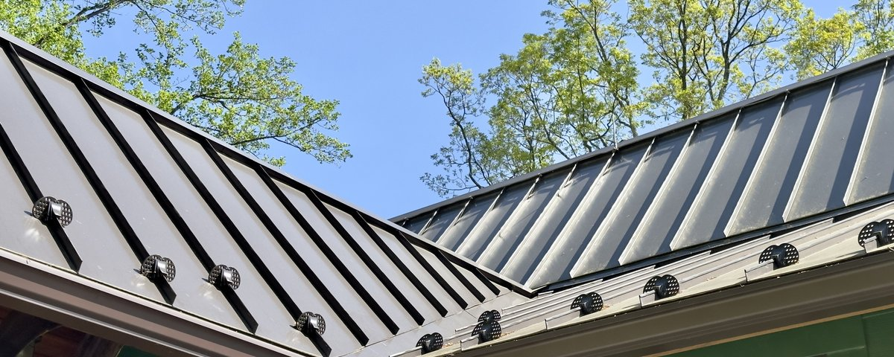
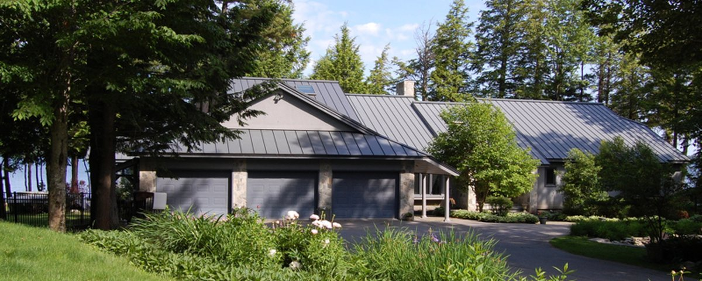
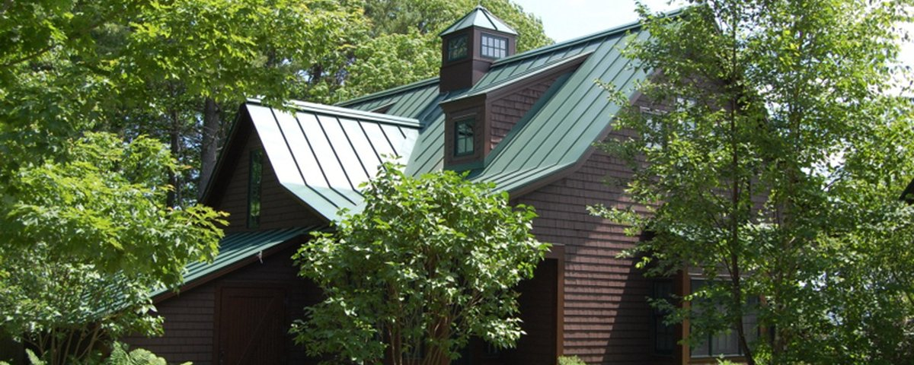

Standing seam metal is the best long-term roofing option for Vermont homes. Hidden fasteners, natural snow shedding, 50+ year lifespan, and virtually no maintenance. If you have ice dam history, a lower-slope roof section, or you're simply done replacing shingles every 25 years, standing seam is worth the conversation.
We install Englert and commercial-grade panel systems — Kynar-coated steel or aluminum with a 40-year finish warranty. Every installation includes a 3-year Forthright workmanship warranty. Metal roofing has far fewer installation-related failure modes than shingles, which is why we can offer a long-term warranty with confidence.
Why Standing Seam for Vermont
- Natural snow shedding — metal's smooth surface sheds snow before it can melt and refreeze at the eaves. Homes with chronic ice dam problems often see them disappear after switching to standing seam.
- 50+ year lifespan — asphalt needs replacement every 25 to 30 years. Standing seam installed today should outlast the mortgage and then some.
- Hidden fasteners — no exposed screws to back out, no penetrations to leak. The seam is mechanically locked, not punctured.
- Handles freeze-thaw cycling — metal expands and contracts predictably. The floating clip system accommodates thermal movement without stressing the roof structure.
- Virtually no maintenance — no granule loss, no cracking, no algae growth to treat.

What We Install
- Englert standing seam panel systems — Kynar 500 PVDF-coated steel or aluminum, 40-year finish warranty against fading, chalking, and peeling
- Hidden fastener clip system — panels float independently on clips, no exposed fasteners, accommodates thermal movement
- Minimum 3:12 pitch — standing seam is appropriate for 3:12 and steeper; lower slopes require a different system
- Continuous ridge vent integrated into the ridge cap for proper attic ventilation
- Eave and rake trim fabricated to match panel color and profile
- Snow guard planning — we discuss snow guard placement on every project, critical above entries, walkways, and mechanical equipment
Color Options
Englert's Kynar 500 color library covers the full range of Vermont-appropriate choices — Slate Gray, Charcoal, Gallery Blue, Colonial Red, Forest Green, Burnished Slate, and Bronze among the most common. We recommend ordering physical samples before deciding; digital swatches don't capture the metallic sheen accurately. We can pull samples for any project we're estimating.


Standing Seam Metal — FAQ
For most Vermont homes, yes — especially those with ice dam history or steep pitches. Standing seam costs more upfront ($18,000 to $40,000+ for a typical home) but lasts 50 years or more with virtually no maintenance and sheds snow naturally. Over a 50-year period it's often the lower-cost option when you factor in that asphalt needs one or two full replacements in the same timeframe. For homeowners planning to stay long-term, it's almost always the better investment.
It significantly reduces ice dam risk. Metal's smooth surface sheds snow before it can melt and refreeze at the eaves — the primary mechanism of ice dam formation. It doesn't eliminate the underlying cause (heat loss through the roof deck), but it removes the fuel that feeds ice dam growth. Homes that have struggled with ice dams every winter often see the problem disappear after switching to standing seam.
3 years on standing seam metal installations. The Englert Kynar-coated panels carry a 40-year finish warranty against fading, chalking, and peeling, plus a lifetime material warranty. Metal has far fewer installation-related failure modes than shingles — when it's installed correctly, there's very little to go wrong. The 3-year workmanship period reflects that reality.
Englert's standard Kynar 500 library includes Slate Gray, Charcoal, Gallery Blue, Colonial Red, Forest Green, Burnished Slate, and Bronze among many others. Their Kynar-coated colors carry a 40-year finish warranty. We strongly recommend pulling physical samples — digital swatches don't capture the metallic sheen accurately. We order samples for any project we're estimating at no charge.
Most residential standing seam installations take two to four days depending on roof size, pitch, and complexity. Standing seam is more labor-intensive than shingles — panels must be measured and cut precisely, every seam is mechanically locked, and trim work at ridges, valleys, and rakes requires more time than shingle work. The payoff is a roof that requires essentially no maintenance for decades.